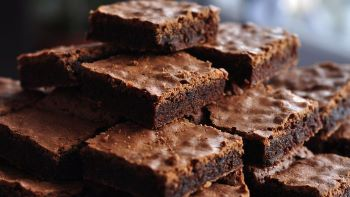
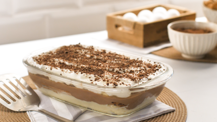
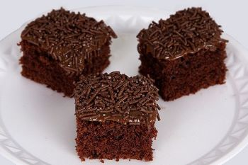
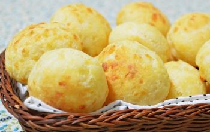

As Melhores Receitas
BROWNIE DE NESCAU

INGREDIENTES
3 ovos
3/4 de xícara de açúcar (135 g)
3/4 de xícara de farinha trigo (90 g)
1 e 1/2 xícara de nescau (180 g)
6 colheres (sopa) manteiga (120 g)
MODO DE PREPARO
Derreta a manteiga.
Em uma tigela, acrescente os ovos e o açúcar peneirado e mexa bem até ficar liso e homogêneo.
Em seguida, coloque a manteiga, o nescau e a farinha de trigo peneirados e mexa bem.
Distribua em uma forma untada e polvilhada com nescau (20cm x 20cm).
Deixe assar no forno em 180° C durante 35 minutos.
Vídeo passo-a-passo da receita
PAVÊ DE CHOCOLATE

INGREDIENTES
1 pacote de bolacha maisena
1/2 copo de leite
1 colher (sobremesa) da chocolate em pó
Creme Branco:
1 lata de leite condensado
1 lata de leite de vaca (use a medida da lata de leite condensado)
1 colher (sobremesa) de amido de milho
2 gemas
Creme de Chocolate:
1 lata de leite condensado
1 lata de leite de vaca (a medida da lata de leite condensado)
1 colher (sobremesa) de amido de milho
2 gemas
4 colheres de chocolate em pó
Cobertura:
4 claras
4 colheres de açúcar
1 lata de creme de leite sem soro
MODO DE PREPARO
Em uma tigela, misture o leite e o chocolate em pó até que esteja completamente dissolvido.
Molhe as bolachas no leite e reserve
Creme Branco:
Em uma panela, leve todos os ingredientes ao fogo médio e misture até obter uma consistência grossa e cremosa.
Creme de Chocolate:
Repita o processo feito no creme branco.
Cobertura:
Bata as claras em neve com o açúcar até obter um creme consistente, adicione o creme de leite e misture delicadamente.
Montagem:
Em um refratário grande, despeje o creme branco, metade das bolachas, creme de chocolate, bolachas e claras em neve.
Repita o processo até preencher todo o refratário e leve à geladeira por 40 minutos.
Vídeo passo-a-passo da receita
NEGA MALUCA

INGREDIENTES
Massa:
3 ovos
1 e 1/2 xícara (chá) de açúcar
2 xícaras (chá) de farinha de trigo
1 xícara (chá) de chocolate em pó ou achocolatado
1/2 xícara (chá) de óleo
1 colher (sopa) de fermento em pó
1 pitada de sal
1 xícara (chá) de água quente
Cobertura:
4 colheres (sopa) de leite
1/2 xícara (chá) de chocolate em pó
1 colher (sopa) de manteiga
1 xícara (chá) de açúcar
MODO DE PREPARO
Massa:
Em um liquidificador, bata os ovos, o açúcar, o óleo, o achocolatado e a farinha de trigo.
Despeje a massa em uma tigela e adicione a água quente e o fermento, misturando bem.
Despeje a massa em uma forma untada e asse em forno médio-alto (200° C), preaquecido, por 40 minutos.
Desenforme ainda quente.
Cobertura:
Em uma panela, leve todos os ingredientes ao fogo até levantar fervura.
Despeje ainda quente em cima do bolo.
Vídeo passo-a-passo da receita
MOUSSE DE MARACUJÁ
INGREDIENTES
1 lata de leite condensado
1 lata de suco de maracujá (medida pela lata de leite condensado)
1 lata de creme de leite sem soro
MODO DE PREPARO
Em um liquidificador, bata o creme de leite, o leite condensado e o suco concentrado de maracujá.
Em uma tigela, despeje a mistura e leve à geladeira por, no mínimo, 4 horas.
Vídeo passo-a-passo da receita
PÃO DE QUEIJO

INGREDIENTES
1 xícara (chá) de leite
1/2 xícara (chá) de óleo
2 xícaras (chá) de polvilho doce
2 ovos
1 xícara (chá) de queijo parmesão ralado
sal a gosto
óleo para untar
MODO DE PREPARO
Bata tudo no liquidificador, iniciando pelos líquidos, até obter uma mistura homogênea.
Feito isso, despeje a massa até a metade das forminhas (para empadas) untadas.
Leve para assar em forno preaquecido a 180º C, por aproximadamente 15 minutos ou até dourar.
Reserve para amornar e desenforme.
Vídeo passo-a-passo da receita